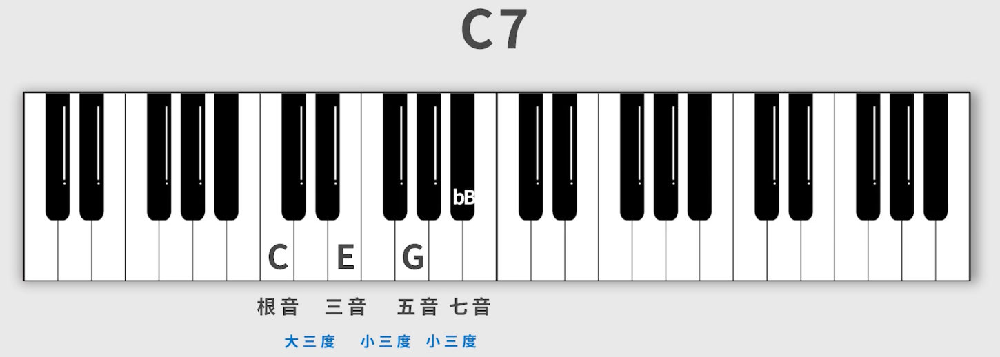

理解能力随着年龄上来后，想重新系统地学乐理/吉他了~
基础乐理
参考教程：
钢琴键盘
钢琴：
- 有最宽的音域
- 直观的黑白键
- 音乐编曲软件左边的是 “钢琴窗”
钢琴键盘布局 —— 88 键：
最左侧 3 键
最右侧 1 键
中间 7 组：
每组 7 白 5 黑（至于几组可能不需要关心，因为有的电子琴键盘不是 88 键的）
学会看黑键来划分组：”左2右3”，左边两个黑键挨一起，右边三个黑键挨一起
在钢琴键盘里，越靠右，音越高，这个音高，晚点会理解
音名
白键音名：
- C D E F G A B （不要记什么 1234567）
半音、全音：
两个相邻音之间的关系，就叫半音关系
- 只有 E/F，B/C 之间是半音关系，他们中间没有黑键
两个相隔音之间的关系，就叫全音关系
如 C/D，或者”黑白黑”的这两个黑键的音
黑键音名：
黑键没有自己的音名，它借相邻的音名来指示
如
C右边紧挨的黑键，叫# C或C #，念作C sharp(当然不是)“升C键”
这个黑键也紧挨D键，叫D b，念作 “降D键”为啥黑键有两个，随便用一个不行？
- 有个东西叫：
还原号（Natural，ヰ或♮），先不用具体管它的定义。它可以将C #“还原” 为C，或将D b还原为D，此时，对于黑键不同的音名，使用还原号得到的结果不同，所以两个音名不能随便用 - 至于什么时候用什么音名，后面会讲
- 有个东西叫：
等音：
- 升降音又不是黑白键之间才有
- 对于相邻的白键，如 E/F，它们也可以用相邻的白键升降音后的符号作音名
E和F b是等音关系
重升、重降（这里的重念 chóng）：
- 定义：升或降两次半音。
- 符号：
诶，刚刚说了钢琴键盘里一组是 “7白5黑”，那不同组之间的音名怎么区分：
- 大字组：
- 字母大写
- 最左边的有下标区分
- 小字组：
- 字母小写
- 右边的有上标区分
- 钢琴标准键盘布局如下：
- 大字二组、【大字一组、大字组 | 小字组、小字一组、小字二组、小字三组、小字四组】，中央 C 是
c1- 在编曲软件里，更简化了，直接把上式的 【…】分别记为 C0【C1、C2、C3、…、C7】，其中中央 C 是 C3

音符时值
我们还没学到简谱的 1234567，所以用
X来替代
时值：
- 音的长短，只要是音肯定有时长，每个音可能唱得长或短
最常见的音符时值：
- 1 全音符：
X--- - 1/2 二分音符：
X-，全音符是二分音符的 2 倍 - 1/4 四分音符：
X，二分音符是四分音符的 2 倍 - 1/8 八分音符：$\underline{X} $
- 1/16 十六分音符：$\underline{\underline{X}} $
- …
休止符
休止符，不发音、”休息”、”换气”，一般用 0 来表示
休止符的音符时值：
- 全休止符：
0 0 0 0 - 二分休止符：
0 0 - 四分休止符：
0 - 八分休止符：$\underline{0} $
- 十六分休止符：$\underline{\underline{0}} $
- …
拍号
拍号，即音乐的律动
以分数的形式来表达拍号：
4/4：念 “4 4 拍”，即 “以 4 分音符为一拍，每小节有 4 拍”
- 分母 = 4：以 4 分音符为一拍
- 诶，那此时，二分音符就是2拍，全音符就是4拍，八分音符是半拍
- 分子 = 4：每小节有 4 拍
- 小节线：
|，在一张谱中有：小节 | 小节 | 小节 | 小节，歌曲就是一个个小节构成的 - 每个小节中的拍数固定，比如以下各个小节都是 4 拍：
（不要觉得很难数，可以硬数，也可以换成 2048 游戏的视角进行合并，能算出来确实是 4 拍） - 再来个错误示范：
- 小节线：
- 分母 = 4：以 4 分音符为一拍
3/4
2/4
3/8
6/8
拍子强弱
做过广播体操吧 233。
打拍子，比如:
- 2拍子：”12 12 12 12”
- 3拍子：”123 123 123 123”
- 4拍子：”1234 1234 1234 1234”
拍子强弱规律（不是死板的）：
- 2拍子: 强弱 强弱 强弱 强弱
- 3拍子：强弱弱 强弱弱 强弱弱
- 4拍子：强弱次强弱 强弱次强弱
- 6拍子6：强弱弱次强弱弱 强弱弱次强弱弱
歌曲速度
仅通过之前学的音符时值和节拍，并不能得出具体的时间值。
歌曲速度（BPM, beat per minute）：
每分钟节拍数
=> 60/BPM = 每一拍的时间(s)
例子：4/4 拍 60BPM：得到 1s = 1拍 = 4分音符
例子：6/8 拍 120BPM：得到 0.5s = 1拍 = 8分音符
附点音符
含义：
附点音符不是独立的，比如附点X分音符
含义是在原本音符的基础上延长一半
举例：
- 附点4分音符 = 4分音符 + 4分音符的一半（8分音符）
写法：$\underline{X} ·$
三连音
类似附点音符，也需要有一个前缀
含义：
- 把一个整体切分成三等分
举例：
4分音符的三连音：把2分音符作为一个整体分成3份
8分音符的三连音：把4分音符作为一个整体分成3份
* 三个音长度加起来等于一个4分音符（时长等于）
区分（下面例子在 4/4 拍下）：
- 8分音符三连音：打3次，实际上只有1拍的时长
- 三个8分音符：打3次，1.5拍的时长
音与节奏的应用：
- 4/4 拍，试唱下面的音和节奏，不会可以回看 https://www.bilibili.com/video/BV1Hg411w7n2?p=11
唱名和简谱数字
概念：
音名（CDEFGAB）和简谱数字（1234567）不对等
而简谱数字（1234567）一定对应唱名（do re mi fa sol la si）
八度：
- 可以先理解为钢琴键盘上的一组，音高从左边一组升到右边临近的一组
- 后面会涉及 音程，即两个音之间的距离
自然调式
从现在开始可以写简谱了：
我们知道 1 3 对应唱名的 do mi，但不知道对应到钢琴键盘上哪个白键（之前说过了音名和简谱数字不对等）
那简谱就需要补充一个信息，即 1 是几，比如 1=C
调式：
- 1=C 传递出的另一个信息是调式
- 调式有很多，这里只涉及自然调式
- 自然调式有大小分
自然大调（白键）：
1=C 传递的信息：”C 自然大调”
音阶排列规律：
全 全 半 全 全 全 半C 大调：C D E F G A B C
G 大调：G A B C D E #F G
* 一个小问题，这个黑键为啥叫 #F 不叫 Gb：因为 7 个音名要按顺序出现D 大调：D E #F G A B #C D

自然大调（黑键）：
一个问题：黑键出发的调式应该用哪个音名？都可以，一般用降调来表示，此时全局更简洁
举例：
自然小调：
小调的音阶唱名是：
la si do re mi fa sol，对应简谱是6 7 1 2 3 4 5A 小调的音名：
A B C D E F G，刚好落在白键上，借助它可以推理一下音阶排列规律音阶排列规律：
全 半 全 全 半 全 全
“关系大小调” (平行大小调)：
C 大调和 A 小调就是关系大小调
例子：A 小调 +
全 半得到 C 大调，此时 C 和 A 就是关系大小调。
此时完全不用推 A 小调的音名，而是把 C 大调的音名右边两个平移到左边即可例子：E 小调 +
全 半得到 G 大调使用 关系大小调 可以用大调的规律来帮忙确定小调的音，思考得比较快
大小调的区别：
- 一般区别（但不绝对，小调也可以写激昂的曲子，甚至洗脑神曲，比如《忐忑》）：
- 小调：暗淡/忧伤
- 大调：欢快/明朗
音程
基础概念：
两个音之间的距离，或者叫 “度”
有几个白键就是多少度
举例：
C -> A：是 6 度（包括他们自身的白键数）
E -> B：5 度
C# -> E：3 度（对边缘的黑键，需要还原成白键再来数总的白键数，在这个例子中 C# 还原成 C，C->E 是 3 度）
Db -> E：2 度（虽然 C# 就是 Db，但 “还原” 这个行为就是去掉升降号）
音程的属性：
#C->E, C->E 都是 3 度，所以单说音程无法描述两个音的距离。所以音程，分为 纯/大/小/减/倍减/增/倍增
- 在两个音是三度的前提下，有5个键，则是大三度：
- 举例：
- #C -> F，包含 5 个键，但是不是大三度，此时连三度都不是，至少是四度
- bD -> F 先是三度，随后有 5 个键，才是大三度
- 举例：
- 图中 “小 是 大-1” 含义举例说明：小3度比大3度要求少一个键
音的乐名
以 C 大调为例：
| 乐名 | 主音 | 上主音 | 中音 | 下属音 | 属音 | 下中音 | 导音 |
|---|---|---|---|---|---|---|---|
| 音名 | C | D | E | F | G | A | B |
| 唱名 | do | re | mi | fa | Sol | la | xi |
| 简谱 | 1 | 2 | 3 | 4 | 5 | 6 | 7 |
其中：主音、下属音、属音构成的和弦分别是主音和弦、下属音和弦、属音和弦
和弦
和弦：三个及以上不同音构成的
三和弦
三和弦：
三个音按三度关系叠加的和弦
三个音：
- 根音：最低音（原位和弦）
- 三音：根音上方三度音
- 五音：根音上方五度音
三和弦分类：
- 【大三和弦】：根音 –大三度-> 三音 –小三度-> 五音
- 【小三和弦】：根音 –小三度-> 三音 –大三度-> 五音
- 【减三和弦】：根音 –小三度-> 三音 –小三度-> 五音
- 【增三和弦】：根音 –大三度-> 三音 –大三度-> 五音
在 C 大调中有 7 个音名（CDEFGAB），能分别组成 7 个和弦，且是本调和弦（本调和离调在 D 和弦中举例）：
- C E G，1 级，（大三和弦），主和弦
- D F A，2 级，（小三和弦）
- D大三和弦：D #F A
- D小三和弦：D F A（只有它在 4 个和弦中没有离调音，所以选它）
- D减三和弦：D F bA
- D增三和弦：D #F #A
- E G B，3 级，（小三和弦）
- F A C，4 级，（大三和弦），下属和弦
- G B D，5级 ，（大三和弦），属和弦
- A C E，6 级，（小三和弦）
- B D F，7 级，（减三和弦）
七和弦
七和弦：
- 四个音（注意不是 7 个音）按三度关系叠加的和弦
- 四个音：
- 根音：最低音（原位和弦）
- 三音：根音上方三度音
- 五音：根音上方五度音
- 七音
分类：
【大七和弦】：大三和弦 + 大三度
【大小七和弦】：大三和弦 + 小三度
- 如果大小七和弦里的根音是这个调式的属音，这个大小七和弦可以叫做【属七和弦】。
比如 C7 和弦在 F 调中是属七和弦；
比如 G7 和弦在 C 调中是属七和弦。 - 每个调只有一个 “属音”，所以只有一个 “属七和弦”，其他的都叫 “大小七和弦”
- 一个调式里，除了 “属七和弦”，其他 “大小七和弦” 都有离调音（7 音）
- 如果大小七和弦里的根音是这个调式的属音，这个大小七和弦可以叫做【属七和弦】。
【小七和弦】：小三和弦 + 小三度
【小大七和弦】：小三和弦 + 大三度
【减七和弦】：减三和弦 + 小三度

【半减七和弦】：减三和弦 + 大三度

九和弦
九和弦：
- 五个音按三度关系叠加的和弦
- 五个音：
- 根音：最低音（原位和弦）
- 三音：根音上方三度音
- 五音：根音上方五度音
- 七音
- 九音
分类：
- 【大九和弦】：大七和弦 + 小三度
- 【小九和弦】：小七和弦 + 大三度

- 【属九和弦】：属七和弦 + 大三度
- 【属九降九和弦】：属九和弦 九音降半音
- 【ADD9和弦】：三和弦 + 九音
挂留和弦
挂留和弦一般用于调式的1级和弦、5级和弦
挂二和弦：用 二度音 替换掉原本的 三度音 所形成的和弦
挂四和弦：用 四度音 替换掉原本的 三度音 所形成的和弦
转位和弦
转位和弦：根音不在最低音的和弦（在的话就叫原位和弦）
通用用转位和弦来获得低音的平稳进行，比如 C 进行到 G 和弦，可以换成 C 转到 G/B 和弦
无论什么转位，根音不会变。
延音线/连音线
延音线：多个相同音高的音连在一起，变成一个音（多用在小节与小节之间）
连音线：歌词一个字有3个音，需要用连音线。
中古调式（教会调式）
更多用在爵士/教会歌曲
7 个调式都是只有白键：
- 1 伊奥利亚 Ionian（自然大调）
- 2 多利亚 Dorian

- 3 弗里多亚 Phrygian
- 4 利底亚 Lydian
- 5 混合利底亚 MixoLydian
- 6 爱奥尼亚 Aeolian（自然小调）
- 7 洛克利亚 Locrian
大调组：
- 1 伊奥利亚 Ionian（自然大调）
- 4 利底亚 Lydian
- 5 混合利底亚 MixoLydian
小调组：
- 2 多利亚 Dorian
- 3 弗里多亚 Phrygian
- 6 爱奥尼亚 Aeolian（自然小调）
- 7 洛克利亚 Locrian
五线谱
参考教程：
吉他
参考教程：
C 大调音阶图：
- 吉他上每一根弦
- 相邻品之间是半音，是小2度关系
- 隔一品为全音，是大2度关系
- 隔两品是小3度关系，隔三品是大3度关系
和弦走向
一个例子：
- F 常接 G 或 C 和弦
- G 常接 C 和弦
和弦级数：
- C调中，C和弦是1级和弦，Dm是2级和弦，以此类推，我们将记忆和弦名改成记忆级数（记数字）
卡农和弦走向：
- C G Am Em F C F G
- 1 5 6 3 4 1 4 5
常用和弦走向：
- 6 4 1 5
- 举例：逃跑计划《夜空中最亮的星》
- 举例：张杰《逆战》
- 1 6 4 5
- 举例：邓紫棋《光年之外》
- 举例：五月天《咸鱼》
- 举例：郝云《活着》
- 举例：邓丽君《恰似你的温柔》
- 4 5 3 6 4 5 1
- 举例：薛之谦《演员》
- 举例：周杰伦《青花瓷》
- 举例：马頔《南山南》
- 1 5 6 3 4 1 4 5
- 举例：林俊杰《学不会》
- 举例：杨宗纬《洋葱》
- 举例：李克勤《红日》
在学完和弦走向后，可以尝试在 app 中将谱换成级数显示方式
扫弦
- 手腕要有翻转动作
- 轻松点，不要紧张
扫弦强弱基础练习：
- 4/4，DDDU 节奏型
- 和弦：C、G、D
- 强弱弱强
- 强则从根音弦开始往下，可多加点力
- 弱则清扫 321 弦，可少点力，这个少点力可能带一点刻意的 “轻抚 321 弦” 的感觉会更容易 get 到